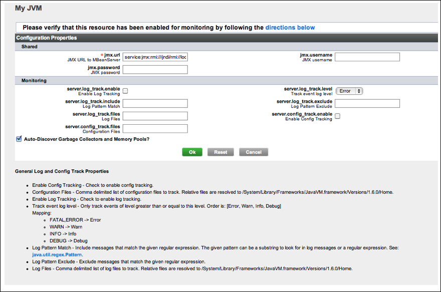

vFabric Hyperic 4.6.6 : Sun JVM
This page last changed on Jan 04, 2012 by mmcgarry.
Topics marked with * relate to features available only in vFabric Hyperic.
This page has instructions for configuring a Sun JVM for monitoring.
Step 1 - Configure JVM for JMX Monitoring
You must explicitly enable JMX monitoring of your JVM. For more information see http://download.oracle.com/javase/1.5.0/docs/api/javax/management/remote/package-summary.html.
Once your JVM is configured for JMX monitoring, proceed to
Step 2 - Add JVM to HQ Inventory
Follow these steps to add the JVM to HQ inventory:
- Use Resources > Browse to navigate to the platform where the JVM runs.
- Click New Server on the Tools menu.
- Select New Server from the Tools menu.
- On the New Server page enter:
- Name — Enter a name for the resource.
- Description: (optional) Enter a description for the resource.
- Server Type: Select "Sun JVM 1.5" for the server type list.
- Install Path: Enter your $JAVA_HOME.
- Click OK
- The Inventory tab for the JVM appears.
- Configure the JVM for monitoring as described in the following section.
Step 3 - Configure JVM for Monitoring
- Click Edit in the Configuration Properties section of Inventory page for the JVM.
- The screenshot below is the Configuration Properties page of a Sun JVM.

- The screenshot below is the Configuration Properties page of a Sun JVM.
- On the Edit Configuration Properties Page:
- jmx.url — Check that the value is correct.
- jmx.username — Enter if if you configured authentication for JMX monitoring access.
- jmx.password — Enter if you configured authentication for JMX monitoring access.
- Configure lot and configuration tracking, as desired.
- Leave the box for "Auto-Discover Garbage Collectors and Memory Pools?" checked.
- Click OK
- After a moment or so, HQ Server will start receiving the default metrics for the JVM.
- The screenshot below is the Inventory page for a Sun JVM.

- The screenshot below is the Inventory page for a Sun JVM.